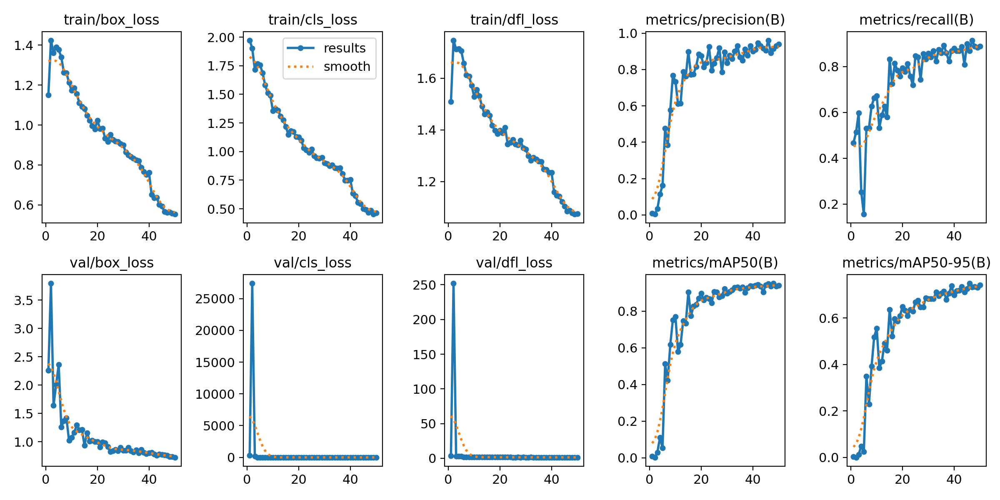
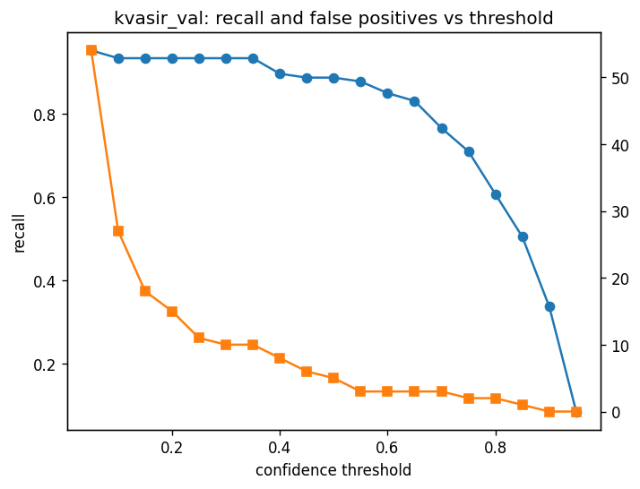
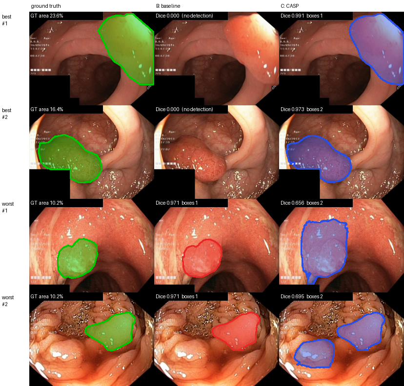

Summary. We trained a YOLOv8-m detector on our Kvasir-SEG split, reproduced the YOLO → SAM 2 baseline of Mansoori et al. [1], and implemented our method, Confidence-Aware Self-Prompting (CASP v1), together with four control experiments. CASP raises per-image Dice from 0.831 to 0.891 on Kvasir-SEG test and from 0.677 to 0.757 on CVC-ClinicDB, a dataset the detector never saw. The control runs show that the gain comes from keeping the boxes the detector is unsure about, not from the extra checking steps. Every number is read from the result files of the runs (docs/tables/phase3/); every choice is recorded in docs/decision_log.md (DL-30 to DL-38).
Detector: YOLOv8-m [4]. The baseline paper [1] uses it and reports that the medium size beat both the small and the large model, so it is the fair choice for a reproduction. It is also small enough (about 25M parameters) to train on a free Colab T4 in under half an hour.
Segmenter: SAM 2, large, frozen [2]. SAM 2 draws a precise mask from a single box prompt without any training on polyps. Our Phase 2 smoke test showed it reaching Dice 0.96–0.97 when the box is right and 0 when the detector misses, which told us that the box, not the segmenter, is where a method can help. Keeping SAM 2 frozen keeps the comparison with the baseline clean.
Our method: CASP v1. The baseline sends every box with YOLO confidence ≥ 0.5 to SAM 2 and throws away the rest, so a polyp the detector found but was only 40% sure of gets no mask at all. CASP uses two thresholds instead of one and treats each box by its confidence c:
| Confidence | Group | What happens |
|---|---|---|
c ≥ t_high | confident | The box goes to SAM 2 unchanged, as in the baseline. |
t_low ≤ c < t_high | uncertain | (1) SAM 2 is prompted four ways: the box, the box grown by 10% and by 20% on every side, and the box plus a point at its centre; (2) the mask SAM 2 itself scores highest (its predicted IoU) is kept; (3) self-prompting: a tight box and the centre of that mask are given back to SAM 2, and the new mask is kept if it scores at least as well; (4) the mask is accepted only if SAM 2's score is ≥ s_min and it fills ≥ 10% of its box. |
c < t_low | dropped | Ignored. |
Why this design. It needs no training: every step only re-prompts the frozen SAM 2, and the image is encoded once, so each extra prompt is cheap. Setting t_low = t_high = 0.5 without the acceptance rule gives exactly the baseline, so any difference between the two can only come from the new rules. We considered and rejected fine-tuning SAM on perturbed prompts and training a box-refinement network (both need training time we do not have and would change the frozen-SAM setting), and using Gaussian-YOLO localisation uncertainty (it requires changing the detector); see DL-34.
Control experiments (DL-35), so that we can see where any gain comes from: T lowers the baseline threshold to t_low and does nothing else; C-all checks every box, not only uncertain ones; C-noiter drops the self-prompting step; O (oracle) gives SAM 2 the ground-truth boxes, the best any detector could do.
sam2 package (pinned at commit 2b90b9f) with the sam2_hiera_large.pt checkpoint; NumPy, Pillow, OpenCV and pandas for data and metrics; PyYAML for configs.src/): train_yolo.py (training recipe from configs/yolo_train.yaml), pipeline/detect.py (detection cache), pipeline/sam2_prompter.py (SAM 2 wrapper: encode once, prompt many), pipeline/refine.py (CASP), pipeline/run_experiment.py (one config + one dataset → results), eval/metrics.py and eval/summarize.py (metrics and tables). One YAML file per experiment in configs/experiments/.data/processed/): Kvasir val / test, ClinicDB, 9 corrupted setsruns/detections/*.jsont_low, t_high (refine.py)per_image.csv, detections.jsonl, summary.json, masks → results tablesThe detection cache is the key design choice (DL-33): YOLO runs once, and every experiment only re-filters the saved boxes, so all six runs see exactly the same detector output and each run is one command, for example python src/pipeline/run_experiment.py --config configs/experiments/casp.yaml --dataset kvasir_test. Results are copied to Google Drive as soon as each run finishes, so a dropped Colab session costs one run, not a whole evening.
Data split (fixed in Phase 2): Kvasir-SEG [3], 700 train / 100 validation / 200 test images, seed 42. CVC-ClinicDB [5] (612 images, another hospital and endoscope) is used only for testing, never for training or tuning, and so is the corrupted copy of the Kvasir test split (blur, brightness/contrast and noise at three severities).
Detector training (DL-31). The recipe was written down before training and not changed afterwards:
| Setting | Value | Reason |
|---|---|---|
| Start weights | COCO-pretrained YOLOv8-m | as in the paper |
| Epochs | 50, no early stopping | baseline README |
| Image size | 640 px | paper: 680, not a multiple of 32 |
| Batch size | 16 | fits a T4 (paper: 64 on an A100) |
| Optimiser, augmentation | Ultralytics defaults | no tuning on our data |
| Seed | 42, deterministic | repeatable run |
| Kept checkpoint | best validation mAP50-95 | used by every experiment |
| Split | mAP50 | mAP50-95 | Prec. | Recall |
|---|---|---|---|---|
| Val (100) | 0.953 | 0.750 | 0.960 | 0.869 |
| Test (200) | 0.943 | 0.747 | 0.867 | 0.908 |
Training took 25 minutes. The losses fall steadily and validation mAP50 first passes 0.9 at epoch 15 (Figure 1, left). mAP50 drops only one point from validation to test, so the detector did not overfit the validation images.
Choosing CASP's thresholds. SAM 2 is not trained, so the only parameters of our method are t_low, t_high and s_min. We ran all 27 combinations of t_low ∈ {0.15, 0.25, 0.35}, t_high ∈ {0.6, 0.7, 0.8} and s_min ∈ {0.6, 0.7, 0.8} on the validation images only and kept the highest mean Dice: t_low = 0.25, t_high = 0.6, s_min = 0.6, with validation Dice 0.8985 against 0.866 for the baseline on the same images. These values were written into the configs before any test run, and each test set was then run once per experiment. On validation, 0.15 was always worse than 0.25 or 0.35 (it lets in 18–19 false boxes instead of 10–12), and s_min = 0.7 and 0.8 gave identical results.


Figure 1. Left: YOLOv8-m training curves over 50 epochs. Right: on the validation split, polyp recall (blue) and false-positive boxes (orange) against the confidence threshold. From 0.5 down to 0.25, recall rises from 0.888 to 0.935 while false boxes only go from 5 to about a dozen; below 0.25 recall barely moves but false boxes shoot up. This is the room our method works in.
| Run | Kvasir-SEG test (200 images) | CVC-ClinicDB (612 images, never trained on) | ||||||
|---|---|---|---|---|---|---|---|---|
| Dice [95% CI] | Pooled | Missed | Box P / R | Dice [95% CI] | Pooled | Missed | Box P / R | |
| B baseline | 0.831 [0.792, 0.871] | 0.878 | 18 | 0.877 / 0.865 | 0.677 [0.648, 0.710] | 0.755 | 144 | 0.890 / 0.686 |
| T threshold only | 0.893 [0.871, 0.913] | 0.901 | 1 | 0.807 / 0.947 | 0.759 [0.736, 0.785] | 0.799 | 75 | 0.820 / 0.780 |
| C CASP v1 | 0.891 [0.868, 0.912] | 0.894 | 1 | 0.802 / 0.942 | 0.757 [0.734, 0.783] | 0.795 | 75 | 0.815 / 0.775 |
| C-all | 0.885 [0.860, 0.907] | 0.879 | 1 | 0.802 / 0.942 | 0.757 [0.734, 0.784] | 0.794 | 75 | 0.808 / 0.769 |
| C-noiter | 0.892 [0.869, 0.913] | 0.895 | 1 | 0.807 / 0.947 | 0.757 [0.734, 0.783] | 0.795 | 75 | 0.813 / 0.774 |
| O oracle | 0.952 [0.943, 0.958] | 0.951 | 0 | 1.000 / 1.000 | 0.945 [0.942, 0.948] | 0.945 | 0 | 1.000 / 1.000 |
Dice: per image, misses counted as 0. Pooled: the paper's pooled Dice. Box P / R: box precision and recall at IoU ≥ 0.5. IoU and timings for every run are in docs/tables/phase3/results.csv.

Figure 2. Kvasir test: ground truth (green), baseline B (red), CASP C (blue). Top two rows: the largest gains, both images the baseline missed completely. Bottom two rows: the largest losses, both caused by a second low-confidence box that C keeps and B did not.
.py files, missing imports, a hard-coded threshold, and an evaluation that skips missed images). We re-implemented the pipeline and checked it against the paper on its own metric (§5).notebooks/05_kaggle_driver.ipynb) that keeps running with the browser closed.Work division (full record in project-division/Project-Division-Phase-3.md §7). Kashish Fatima (lead): evaluation harness, first versions of the pipeline code, experiment configs, results tables and the Colab runs. Khushbakht Sohail: detector code (training recipe, detection cache), detector and baseline analysis. Zahra Saeed: SAM 2 wrapper, CASP code, experiment runner and notebooks, method and ablation analysis, Kaggle driver, this report.